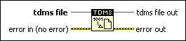

TDMS Flush Function
Owning Palette: TDM Streaming VIs and Functions
Requires: Base Development System
Writes all buffers of the .tdms file data to the file identified by the tdms file input.
Data written to a .tdms file often resides in a buffer until the buffer fills up or until you close the file. This function forces the operating system to write any buffer data to the .tdms file.
 | Note Flushing data too frequently might negatively impact the writing performance of your application. |

 Add to the block diagram Add to the block diagram |
 Find on the palette Find on the palette |